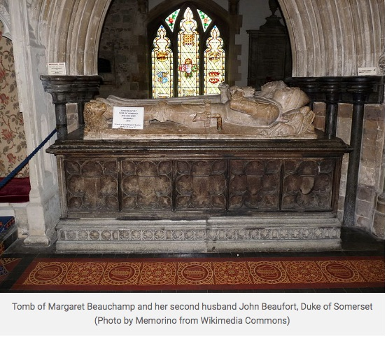

Margaret was born c. 1410 and was the daughter of Sir John Beauchamp, 3rd Baron Beauchamp of Bletsoe, Bedfordshire and his second wife Edith Stourton, daughter of Sir John Stourton of Stourton, Wiltshire. Margaret’s family was more of the gentry than the nobility. We know nothing of her childhood but judging from the way she educated her daughter later, she must have received a solid education. In 1421, her only brother John died young and she inherited his manors of Lydiard Tregoze in Wiltshire, Ashmore in Dorset and Bletsoe and Keysoe in Bedfordshire. She also inherited the right to any barony of Beauchamp.
Margaret was born c. 1410 and was the daughter of Sir John Beauchamp, 3rd Baron Beauchamp of Bletsoe, Bedfordshire and his second wife Edith Stourton, daughter of Sir John Stourton of Stourton, Wiltshire. Margaret’s family was more of the gentry than the nobility. We know nothing of her childhood but judging from the way she educated her daughter later, she must have received a solid education. In 1421, her only brother John died young and she inherited his manors of Lydiard Tregoze in Wiltshire, Ashmore in Dorset and Bletsoe and Keysoe in Bedfordshire. She also inherited the right to any barony of Beauchamp.When Margaret was about fifteen, she married Sir Oliver St. John. Margaret would give birth to two sons and five daughters with St. John, all of whom survived infancy. All the adult children would marry except for the last daughter, another Margaret who became the abbess of Shaftsbury. Sir Oliver died fighting in France in 1437 leaving Margaret a widow with many children to raise.
In 1442, Margaret married again, this time to John Beaufort who was the 3rd Earl of Somerset at the time of the marriage. John was the grandson of John of Gaunt, the third son of King Edward III.
Margaret and John were married in 1442 and Margaret quickly became pregnant. Their daughter Margaret was born on May 31, 1443 at Bletsoe. John was elevated to the title of Duke of Somerset and he was made Knight of the Garter that same year. Once again, John wanted to lead an expedition to France in hopes of great victory and spoils to replace his depleted personal fortune. In August, his forces were gathered at Cherbourg. But the campaign was an anti-climax after high expectations. He paid off his troops and returned to England. Because the campaign had been deemed a failure, he was barred from court. By this time he was ill and remained at Corfe and Wimborne. He died on May 27, 1444, possibly by his own hand. Margaret was again a widow with another young child added to her brood from her first marriage.
Margaret and her children lived a quiet life at her homes of Bletsoe and at the Beaufort home of Maxey in the Lincolnshire Fens. These houses were very small and homey, not ostentatious castles. Margaret was very astute and took a very vigorous interest in managing her estates. The younger Margaret always held her St. John half-brothers and sisters in affectionate esteem so we can imagine their early life under their mother’s care was happy. Margaret and her young daughter were very close. Because her youngest child was of the most aristocratic birth, Margaret saw to it that she was highly educated. She was also one of the greatest heiresses in the kingdom.
 Care of the younger Margaret was entrusted to her mother but the safekeeping and supervision of her lands and marriage had been rewarded by King Henry VI to William de la Pole, Duke of Suffolk. By 1450, William had married young Margaret to his own son John. Because of Margaret’s young age, she stayed with her mother. But in the same year, Suffolk was being blamed for mismanaging the King’s government and was fighting for his political life. He was eventually murdered and Margaret’s wardship was returned to the king. In February of 1453, Margaret and her daughter were summoned to court to visit the king and his queen, Margaret of Anjou.
Henry instructed Margaret to bring her daughter to Windsor to await an audience upon his summons. He awarded Margaret one hundred marks (about £25,000 in today’s money) to buy clothing for the young Margaret. She must have been sumptuously dressed when presented at court. The king’s intention was to annul her marriage to John de la Pole and award her marriage rights to his half-brothers Edmund and Jasper Tudor. It was eventually decided that young Margaret would marry Edmund in two years.
Margaret returned home to Bletsoe. Her daughter and Edmund Tudor were married there on November 1, 1455. Margaret left her mother’s home and gave birth to a son named Henry in Pembroke Castle on January 28, 1457. Margaret Beauchamp was now the grandmother of the future King Henry VII.
Sometime between May 27, 1444 and August 31, 1447, Margaret married again. Leo (Lionel) Welles, 6th Baron Welles was a wealthy Lincolnshire landowner, soldier and royal councilor to the king.
Margaret died sometime before June 3, 1482. She was buried next to her husband John Beaufort, Duke of Somerset in St. Cuthberga Churchyard at Wimborne Minster in Dorset, England.
Sources https://thefreelancehistorywriter.com/2017/02/24/margaret-beauchamp-duchess-of-somerset https://en.wikipedia.org/wiki/Margaret_Beauchamp_of_Bletso